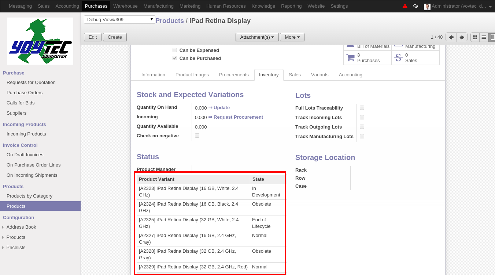

Lifecycle Status
You can check the status of Products Variants form the Product
Template form view by checking the
Status section in the
Inventory Tab. You will
find a list of the Products Variants and its current status.


The status of the Product Variant is manage in the header of
form view as a clickable statusbar widget and with default
value In Development.
Also some search filters were added to search and group by products lifecycle status. Just go to a Product Variant list view and filter.